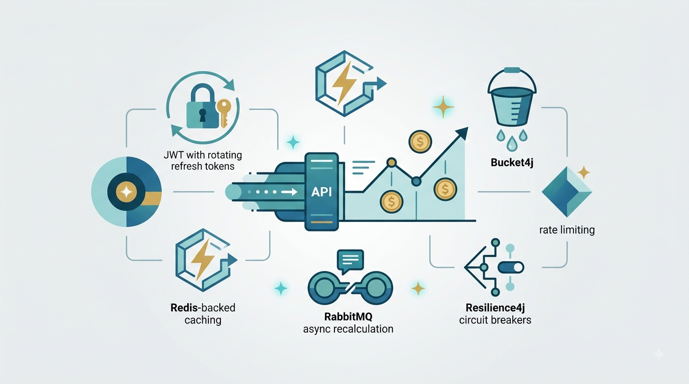
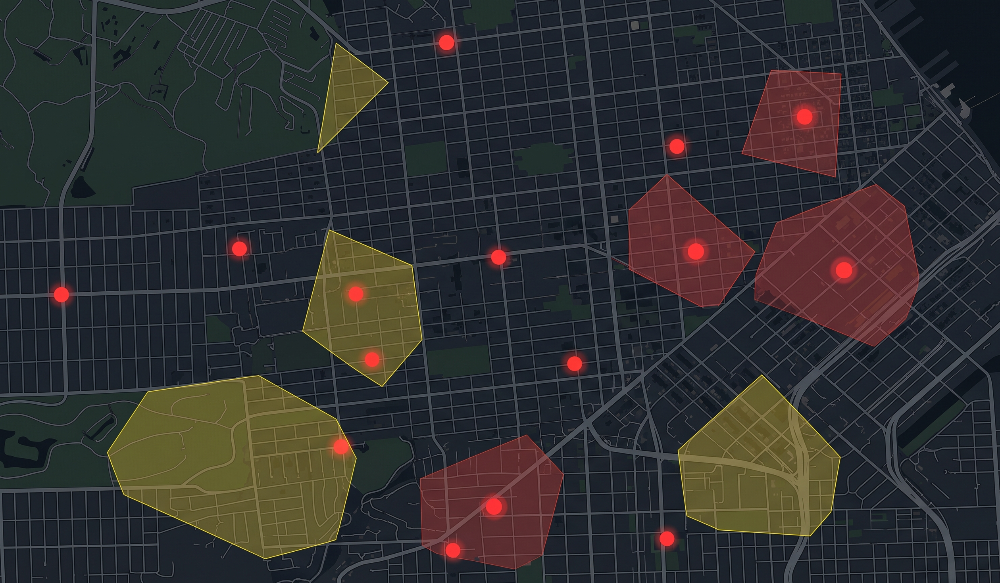
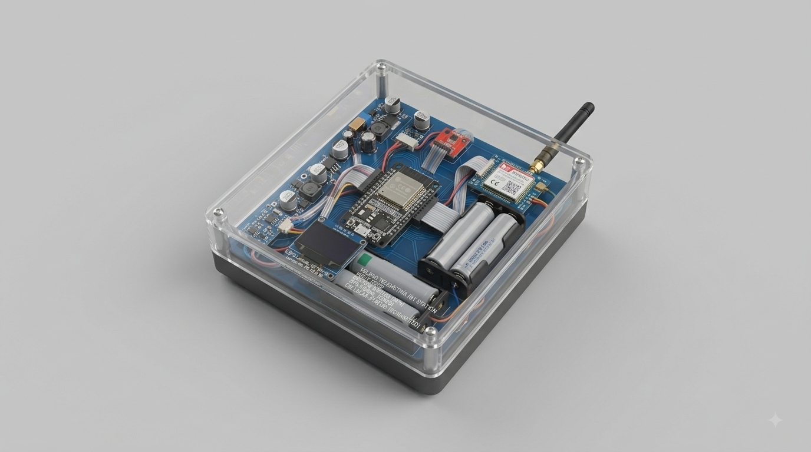

Alex
Brinckmann
Backend Developer & Data Analytics Instructor
Available for work
About me

I am a backend developer and data analytics instructor with a creative yet structured mindset, passionate about bridging the gap between data insights, software engineering, and robotics. My technical expertise spans data analytics, application development, and hardware-software integration, backed by hands-on experience with Python, SQL, and Power BI.
As a native Spanish speaker with C1 German and C1 English, I communicate and collaborate effectively in multicultural environments, bringing a versatile, multi-disciplinary approach to every project.
Technologies
Languages & Frontend
Backend & Databases
Tools & Analytics
Selected Projects
Finance Tracker App
A production-grade REST API for personal finance tracking engineered with Spring Boot and PostgreSQL to master advanced system design. Designed for enterprise reliability, it features JWT with rotating refresh tokens, Redis-backed caching, Bucket4j rate limiting, RabbitMQ async recalculation, and Resilience4j circuit breakers.

DIY-Drone
Developing an autonomous FPV-hybrid UAV built on a carbon fiber racing chassis using a Pixhawk controller and ArduPilot. Currently optimizing flight stability through custom PID tuning and log analysis, with real-time telemetry and Raspberry Pi companion computer integration in progress.

Safe Street
Building a citywide incident reporting platform engineered for robust system design, covering categories from theft to home invasions. The architecture focuses on scalable, reliable data ingestion and geospatial querying, backed by a structured PostgreSQL schema and a service-oriented backend designed to handle real-time reports at scale.

Sailboat IoT Telemetry Station
Autonomous, battery-powered telemetry unit for a sailboat. It monitors ambient temperature, humidity, and bilge water level, and reports the readings over a 2G/GPRS cellular connection three times a day. The system is designed to run for months on two 18650 Li-ion cells (in parallel) by spending nearly all of its time in deep sleep, waking on a timer or immediately on a bilge water alert. Sensor telemetry and alerts are displayed in a companion App.

Experience
-
Board Member — Finance
Dec 2025 – PresentINTER MAINZ e.V., Germany
- Responsible for financial administration and budget planning of the association.
- Conducted annual financial analysis and developed an interactive dashboard to transparently display the association's finances.
Finance Data Visualization Management -
Teaching Assistant — Data Analytics
Feb 2024 – Present- Mentored students in data analysis methodologies using Excel, SQL, and Power BI.
- Provided technical support for Python scripting and database management.
- Coordinated the evaluation of final capstone projects, ensuring code quality and analytical depth.
Python SQL Power BI Excel -
B.Sc. Applied Computer Science
2024 – PresentMainz University of Applied Sciences, Germany
Focus on software engineering, database systems, and applied AI.
-
Computer Science Internship
Sep 2022Johannes Gutenberg University Mainz, Germany
- Spearheaded the development of a Python-based arcade game using the Pygame library.
- Implemented OOP principles to structure game logic and physics.
- Collaborated in an agile team environment to meet strict development deadlines.
Python Pygame Git -
B.Sc. Informatik (Computer Science)
2022 – 2024Johannes Gutenberg University Mainz, Germany
Foundational studies in algorithms, data structures, and mathematics.
-
International Trilingual Baccalaureate
2020Instituto Ballester, Argentina
Specialization in Natural Sciences. Acquired C1 German (DSD II).